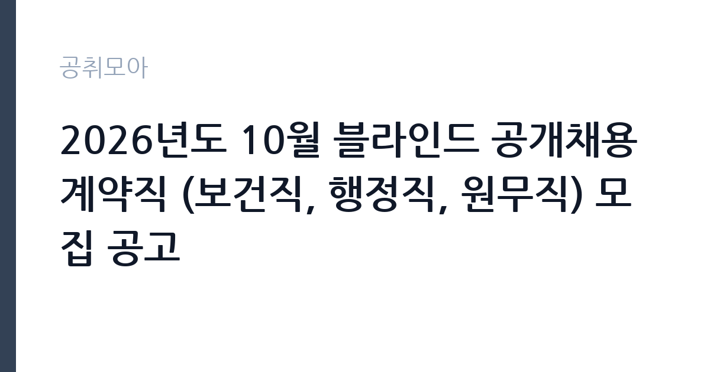

[공공기관] 2026년도 10월 블라인드 공개채용 계약직 (보건직, 행정직, 원무직) 모집 공고
부산대학교병원 · 경남 · 마감 2026-11-09 (D-15) · 출처 잡알리오

한눈에 보는 모집 조건
| 기관 | 부산대학교병원 |
|---|---|
| 공고명 | 2026년도 10월 블라인드 공개채용 계약직 (보건직, 행정직, 원무직) 모집 공고 |
| 고용형태 | 기간제 |
| 근무지 | 경남 |
| 게시일 | 2026-10-26 |
| 마감일 | 2026-11-09 (D-15) |
지원자격, 이렇게 읽으세요
- 공공기관 채용공시
- 세부 조건은 원문 공고문 확인
분야별 요건이 뚜렷합니다. 보건직은 임상병리사(진단검사의학과, 병리과), 방사선사(영상의학과), 보건의료정보관리사, 작업치료사(재활의학과)가 각각 해당 면허를 요구하고, 물리치료사는 면허에 더해 지정된 교육 과정을 하나 이상 이수해야 합니다. 인정되는 교육은 대한재활의학회 중추신경계 발달 재활치료 연수교육, 한국보바스협회 보바스 베이직 코스, 대한고유수용성신경근촉진법학회 PNF level 1·2 또는 Advance 과정입니다. 행정직 일반행정은 워드프로세서나 컴퓨터활용능력 자격증을 요구하고, 원무직 업무지원은 별도 자격 요건을 두지 않습니다. 물리치료사 지원자에게 교육 이수증이 빠지면 서류에서 바로 탈락하므로 가장 먼저 챙겨야 할 서류입니다.
이 공고의 포인트
이 공고의 핵심은 한 번의 접수로 여러 직종을 함께 뽑는다는 점입니다. 17명 규모라 직종별 선발 인원이 나뉘어 있고, 자격 요건이 명확한 면허직은 지원 가능 인원 자체가 제한되어 경쟁이 상대적으로 낮습니다. 반대로 원무직 업무지원처럼 자격 요건이 없는 분야에는 지원자가 몰리는 경향이 있습니다. 계약직이고 대체인력 여부가 '예'로 표시되어 있어, 어떤 인력의 대체인지와 계약 기간이 근무 조건을 판단하는 기준이 됩니다. 블라인드 채용이므로 학교와 스펙이 아니라 면허, 경력, 직무 이해도로 승부가 갈립니다.
전형은 어떻게 진행되나
1차는 서류전형으로 선발예정인원의 최대 5배수를 뽑고, 입사지원서의 적격·부적격 판정이 중심입니다. 2차는 면접전형으로 선발예정인원의 1배수를 임원 면접 점수로 결정하며, 최종 단계에서 제출서류 적격 여부를 다시 확인합니다. 서류 단계가 점수 경쟁이 아니라 요건 충족 심사에 가깝기 때문에, 자격증과 면허, 교육 이수증을 빠짐없이 첨부하는 것이 사실상 전형의 절반입니다. 면접은 직무 수행 능력과 조직 적합성을 확인하는 방식으로 진행되고, 병원 특성상 교대 근무와 환자 응대에 대한 질문이 나옵니다. 최종합격자는 결격사유 조회와 채용 신체검사를 거쳐 임용됩니다.
원문에서 확인한 전형 방식
[보건직_임상병리사(진단검사의학과)]임상병리사 면허증 소지자, [보건직_방사선사(영상의학과)]방사선사 면허증 소지자,[보건직_보건의료정보관리사]보건의료정보관리사 면허증 소지자,[보건직_임상병리사(병리과]임상병리사 면허증 소지자,[보건직_물리치료사(재활의학과)]?물리치료사 면허증 소지자로서 아래 관련 교육 중 1개 이상 이수자<관련 교육 과정>-대한재활의학회 중추신경계 발달 재활치료 연수교육-한국보바스협회 보바스 베이직 코스-대한고유수용성신경근촉진법학회 PNF level 1,2또는Advance교육,[보건직_작업치료사(재활의학과)]작업치료사 면허증 소지자,[행정직_일반행정]워드프로세서 또는 컴퓨터활용능력 자격증 소지자, [원무직_업무지원] 해당사항 없음
이런 분께 추천해요
- 해당 면허를 보유하고 병원 임상 실습 경험이 있는 분
- 원무·행정 업무로 병원 행정을 시작하려는 분
- 교대 근무와 환자 응대를 감당할 수 있는 분
지원 전 체크리스트
- 물리치료사 지원자라면 인정 교육 이수증을 발급받아 첨부했는가
- 지원서에 사진·학교명·출생지 등 블라인드 위반 정보가 남아 있지 않은가
- 면허증 사본과 경력증명서를 분야별 요건과 대조했는가
- 접수 마감이 11월 9일 오전 10시라는 점을 달력에 표시했는가
모집 일정과 제출 타이밍
공고는 10월 26일에 등록되었고 접수는 11월 9일 오전 10시에 마감됩니다. 마감 시각이 낮 10시라는 점이 중요합니다. 오후에 제출하려다 시간을 놓치는 사례가 흔하므로 11월 6일까지 제출을 마치는 일정을 권합니다. 서류전형 결과와 면접 일정은 병원 채용 홈페이지와 개별 통보로 안내되며, 면접은 서류 발표 후 짧은 간격으로 진행됩니다. 면허증과 경력증명서는 발급에 며칠이 걸릴 수 있으니 접수 첫날 신청해 두십시오.
직무 이해하기: 공공기관
보건직은 병동과 검사실에서 실제 검사와 치료를 수행합니다. 임상병리사는 채혈과 검체 분석, 정도관리와 장비 점검을 맡고, 병리과 근무자는 조직 검체 처리와 염색 과정을 담당합니다. 방사선사는 영상 촬영과 장비 안전 관리, 피폭 관리 기록을 수행합니다. 물리치료사와 작업치료사는 재활의학과에서 운동치료와 일상생활동작 훈련을 진행하고, 환자 상태 변화를 의료진에게 보고합니다. 행정직은 진료 지원과 문서 관리, 통계 작성 업무를 맡고, 원무직 업무지원은 접수와 수납 창구 보조, 외래 안내, 서류 정리를 담당합니다. 병원 업무는 교대와 당직이 기본이라 근무표에 따라 생활 패턴이 달라집니다.
자기소개서 작성 팁
블라인드 채용의 자기소개서는 스펙 나열이 아니라 직무 수행 장면으로 채워야 합니다. 지원 분야의 실제 업무를 한 문장으로 정의하고, 본인이 그 업무를 해봤거나 배운 경험을 구체적으로 붙이십시오. 예를 들어 임상병리사라면 실습에서 맡았던 검체 종류와 장비, 정도관리 경험을, 원무직이라면 고객 응대 중 민원을 해결한 사례를 쓰면 됩니다. 병원이라는 조직의 특성상 협업과 보고 체계를 이해하고 있다는 점을 드러내면 좋습니다. 마지막 문단은 장기 근무 의사와 교대 근무 수용 여부로 정리하십시오.
면접 준비 포인트
면접에서는 면허와 실무 경험을 확인하는 질문이 먼저 나옵니다. 검사 결과가 이상할 때 어떻게 대응하는지, 환자가 검사를 거부할 때 어떻게 설득하는지, 야간 당직 중 장비 이상이 발생하면 어떤 순서로 조치하는지 같은 상황형 질문이 이어집니다. 원무직은 수납 오류나 대기 시간에 대한 불만을 어떻게 처리할지 묻습니다. 병원 업무는 환자의 안전과 직결되므로 안전 수칙과 보고 체계를 지킨다는 점을 분명히 말하는 것이 중요합니다. 교대 근무와 주말 근무 가능 여부도 반드시 확인되므로 답변을 미리 정해 두십시오.
급여·근무조건 읽는 법
계약직 보수는 병원의 직종별 임금 규정에 따라 기본급과 각종 수당, 상여로 구성됩니다. 이번 공고는 본문에 연봉이나 월 급여 실액을 싣지 않아 구체적인 금액은 첨부 공고문과 처우 설명에서 확인해야 하며, 확인되지 않은 수치는 추정해서 계산하지 않는 것이 원칙입니다. 비교할 때는 기본급만 보지 말고 정액급식비, 명절휴가비, 교대·야간 수당, 복지포인트까지 포함한 연간 총액으로 환산하십시오. 계약 기간이 정해진 자리이므로 계약 기간 동안의 총액과 재계약 가능성, 정규직 전환 대상 여부를 함께 확인해야 합니다. 하한선은 2026년 적용 최저임금 시급 10,320원, 월 환산 2,156,880원(고용노동부 고시 제2025-47호)입니다. 세전 금액에서 약 9% 안팎이 공제된다고 보고 실수령액을 가늠하시면 됩니다.
자주 묻는 질문
- 블라인드 채용인데 경력은 어떻게 평가되나요?
지원서에 학교명과 출생지, 사진을 기재하지 않고 면허와 경력 사항만으로 서류 적격을 판정합니다. 경력은 직무와 관련된 내용으로 구체적으로 기재해야 인정받을 수 있습니다. - 물리치료사는 어떤 교육을 이수해야 하나요?
대한재활의학회 중추신경계 발달 재활치료 연수교육, 한국보바스협회 보바스 베이직 코스, 대한고유수용성신경근촉진법학회 PNF level 1·2 또는 Advance 과정 가운데 하나 이상을 이수해야 하며, 이수증을 첨부해야 합니다. - 마감 시각이 왜 오전 10시인가요?
병원 채용 시스템이 오전 10시를 기준으로 접수를 마감합니다. 오후에 제출하려다 놓치는 일이 생기므로 마감 사흘 전까지 제출을 마치는 편이 안전합니다.
함께 보면 좋은 공고
[공공기관] 2026년도 10월 블라인드 공개채용 국비계약직(작업치료사) 모집 공고 — 마감 2026-11-09[공공기관] 한국토지주택공사 인천지역본부 기간제근로자(매입행정역, 매입기술역, 공사원가검토역) 채용공고 — 마감 2026-11-09[공공기관] 2026년도 제5차 신규직원(정규직) 채용 — 마감 2026-11-10출처: 잡알리오 공개정보를 바탕으로 공취모아가 정리한 안내글입니다. 모집 조건·일정은 변경될 수 있으니 지원 전 반드시 원문 공고문을 확인하세요. 본 글은 정보 제공용이며 합격을 보장하지 않습니다.